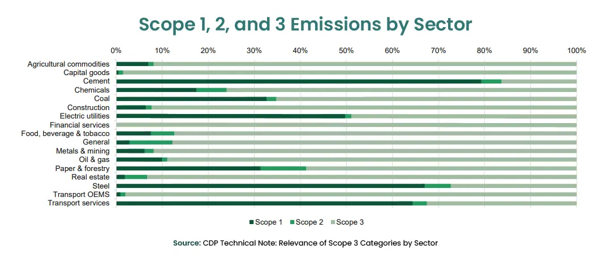

Scope 3 emissions constitute the most substantial share of a company's environmental impact. As evidenced by the CDP analysis, these emissions often account for 70-90% of an organization's total carbon footprint.

Understanding Scope 3 Emissions
Scope 3 emissions encapsulate the indirect greenhouse gas emissions that occur throughout a company's value chain, both upstream and downstream. Unlike Scope 1 emissions (direct emissions from owned or controlled sources) and Scope 2 emissions (indirect emissions from purchased energy), Scope 3 emissions extend beyond the immediate operational boundaries of an organization. They encompass a myriad of activities, including the extraction and production of raw materials, transportation of goods, product use by consumers, and disposal of waste.
Scope 3 emissions are categorized into 15 different categories, as defined by the Greenhouse Gas Protocol, which provides a comprehensive framework for measuring and managing greenhouse gas emissions.
Why Do Scope 3 Emissions Matter To Companies?
-
Carbon reporting stands as a key focal point within regulatory frameworks
- Europe - The European Union has been at the forefront of climate action, with the EU Green Deal aiming for carbon neutrality by 2050. The Corporate Sustainability Reporting Directive (CSRD) is set to expand the scope of reporting, requiring companies to disclose detailed information on environmental matters, including Scope 3 emissions.
- United States - The U.S. Securities and Exchange Commission (SEC) has proposed new rules mandating comprehensive climate disclosure, including Scope 3 emissions, for publicly traded companies. This move signals a significant shift towards greater transparency and accountability in the American corporate landscape.
- United Kingdom - The UK's Streamlined Energy and Carbon Reporting (SECR) framework requires large companies to report on their energy consumption and associated greenhouse gas emissions, which may include Scope 3 emissions. This regulation encourages businesses to assess and disclose the environmental impact of their entire value chain.
- Australia - The government of Australia has announced the release of new draft legislation which would introduce mandatory climate-related reporting requirements for large and medium sized companies, including disclosures on climate-related risks and opportunities, and on greenhouse gas emissions across the value chain.
-
Organizations Profit from Measuring Scope 3 Emissions
- Holistic Environmental Impact Assessment - Accurate measurement of Scope 3 emissions allows enterprises to gain a comprehensive understanding of their entire carbon footprint. This holistic perspective is crucial for developing effective sustainability strategies that address the full extent of environmental impact.
- Supply Chain Resilience and Risk Mitigation - Enterprises are interconnected through complex supply chains. By measuring Scope 3 emissions, companies can identify environmental risks and vulnerabilities within their supply chains. This insight is instrumental in building resilience against potential disruptions and mitigating risks associated with climate change.
- Stakeholder Expectations and Reputation Management - As sustainability becomes a focal point for consumers, investors, and other stakeholders, enterprises are under growing pressure to transparently communicate their environmental efforts. Measuring Scope 3 emissions accurately enables organizations to demonstrate their commitment to sustainability, enhancing their reputation and meeting the expectations of socially conscious stakeholders.
- Operational Efficiency and Cost Savings - Identifying emission hotspots in the value chain allows enterprises to pinpoint areas for improvement. By optimizing processes and reducing emissions, companies not only contribute to environmental conservation but also enhance operational efficiency, potentially leading to cost savings in the long run.
As regulatory landscapes evolve globally, the disclosure of Scope 3 emissions is becoming a standard practice for enterprises. Navigating these regulations is not just a legal requirement but a strategic move towards fostering transparency, accountability, and sustainable business practices on a global scale.
In conclusion, the exploration of Scope 3 emissions unveils a critical dimension of corporate sustainability that demands attention from enterprises. As we navigate an era defined by heightened environmental awareness and accountability, accurate measurement of Scope 3 emissions emerges as an indispensable imperative for organizations.
ecoPRISM is designed to streamline the complex process of managing Scope 3 emissions. By leveraging our innovative platform, you can significantly ease the burden of Scope 3 emissions management, enabling you to focus on sustainable practices and meet environmental goals with efficiency and precision.